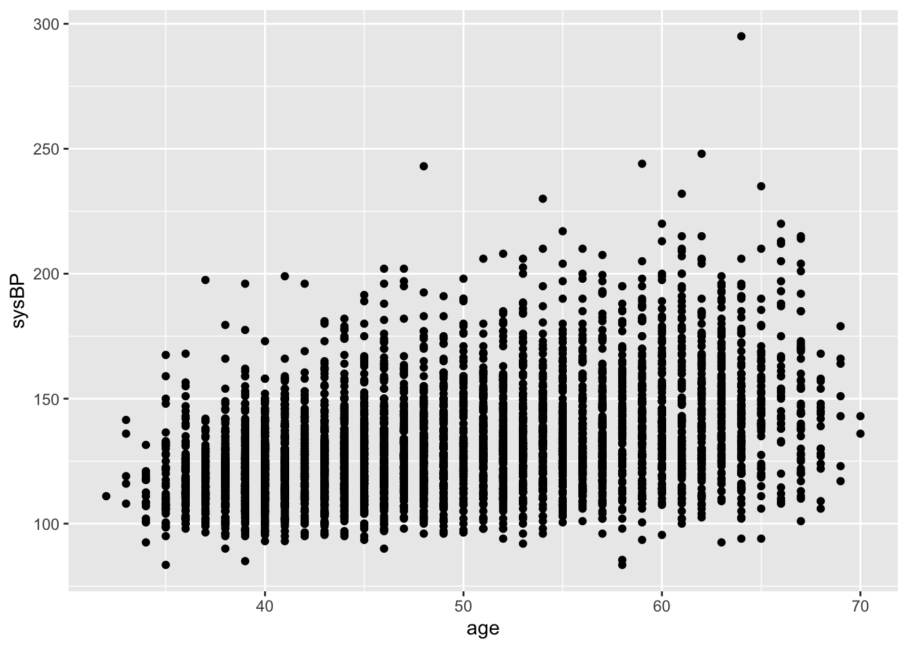
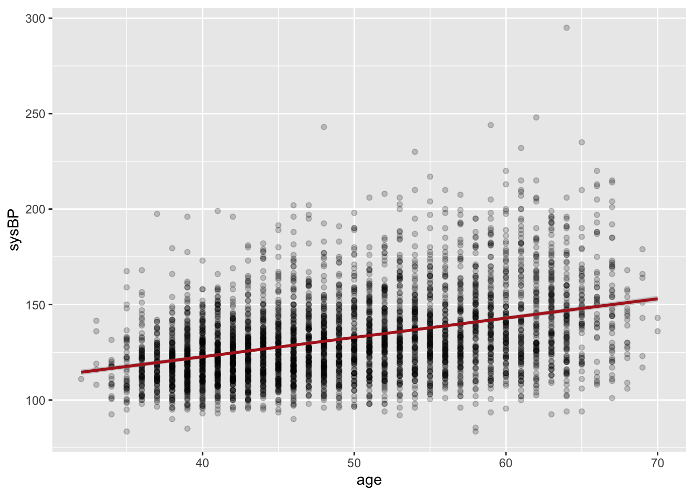
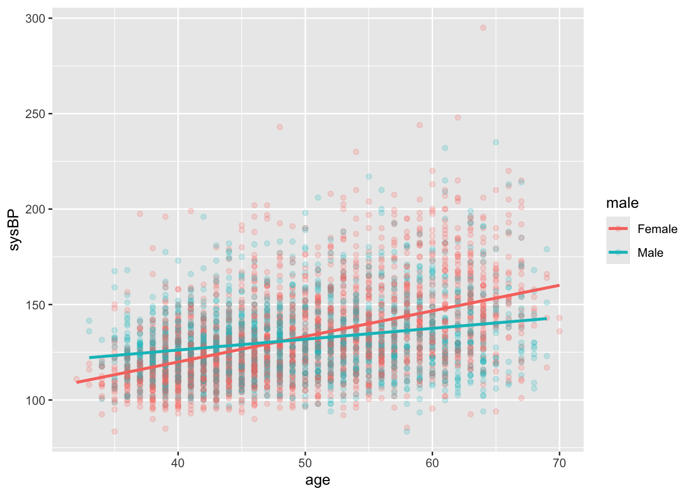
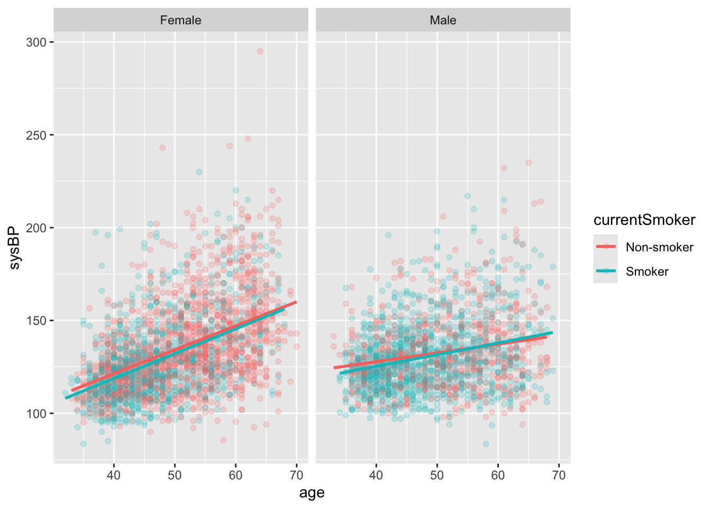
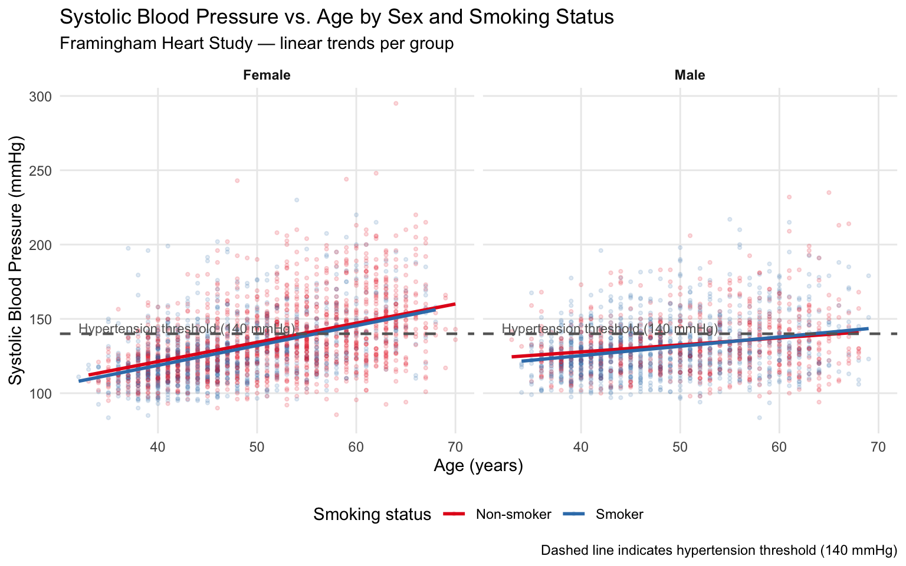

library(tidyverse)
library(this.path)
setwd(this.dir())
framingham <- read_csv("../../data/framingham.csv") |>
mutate(
male = factor(male, levels = c(0,1), labels = c("Female","Male")),
currentSmoker = factor(currentSmoker, levels = c(0,1), labels = c("Non-smoker","Smoker")),
prevalentHyp = factor(prevalentHyp, levels = c(0,1), labels = c("No","Yes")),
diabetes = factor(diabetes, levels = c(0,1), labels = c("No","Yes")),
TenYearCHD = factor(TenYearCHD, levels = c(0,1), labels = c("No","Yes")),
education = factor(education, levels = 1:4,
labels = c("Some HS","HS Diploma","Some College","College Degree"))
)Day 4 (PM) Lab: Data Visualization with ggplot2
SC INBRE Biostatistics Summer Intensive 2026
1 Overview
This lab covers everything from Day 4 AM:
- Distributions: histograms, density plots, bar charts
- Covariation: boxplots, violin plots, scatterplots, frequency polygons
- Polish:
labs(),theme(), scales, facets, annotations,ggsave()
How this lab works:
- Part 1 (instructor demo, ~20 min): Follow along as the instructor builds a complete figure from raw data to publication-ready output.
- Part 2 (on your own, ~90 min): Six exercises using the Framingham data and the built-in
nycflights13dataset. Create a new.qmdfile, work through the exercises, render when done.
The Quick Reference Card in Section 3 has the key functions.
2 Part 1: Instructor Demo
2.1 Setup
2.2 Step 1: Start Simple
Always start with the simplest version of the plot and build from there.
ggplot(framingham, aes(x = age, y = sysBP)) +
geom_point()
2.3 Step 2: Reduce Overplotting, Add a Trend
ggplot(framingham, aes(x = age, y = sysBP)) +
geom_point(alpha = 0.2) +
geom_smooth(method = "lm", color = "firebrick", se = TRUE)
2.4 Step 3: Add a Grouping Variable
ggplot(framingham, aes(x = age, y = sysBP, color = male)) +
geom_point(alpha = 0.2) +
geom_smooth(method = "lm", se = FALSE)
2.5 Step 4: Facet
ggplot(framingham, aes(x = age, y = sysBP, color = currentSmoker)) +
geom_point(alpha = 0.2) +
geom_smooth(method = "lm", se = FALSE) +
facet_wrap(~ male)
2.6 Step 5: Polish — Labels, Theme, Color Scale, Annotation
ggplot(framingham, aes(x = age, y = sysBP, color = currentSmoker)) +
geom_point(alpha = 0.15, size = 0.8) +
geom_smooth(method = "lm", se = FALSE, linewidth = 1) +
geom_hline(yintercept = 140, linetype = "dashed",
color = "gray40", linewidth = 0.8) +
annotate("text", x = 32, y = 144,
label = "Hypertension threshold (140 mmHg)",
hjust = 0, size = 3, color = "gray40") +
facet_wrap(~ male) +
scale_color_brewer(palette = "Set1") +
theme_minimal() +
theme(
legend.position = "bottom",
panel.grid.minor = element_blank(),
strip.text = element_text(face = "bold")
) +
labs(
title = "Systolic Blood Pressure vs. Age by Sex and Smoking Status",
subtitle = "Framingham Heart Study — linear trends per group",
caption = "Dashed line indicates hypertension threshold (140 mmHg)",
x = "Age (years)",
y = "Systolic Blood Pressure (mmHg)",
color = "Smoking status"
)
This is the workflow for every figure: start plain, layer in complexity, polish last. The plot code becomes your record of every decision you made.
3 Part 2: Exercises
3.1 Instructions
Step 1. Open a new Quarto document: File → New File → Quarto Document. Title it "Day 4 Lab: Data Visualization", select HTML, click Create.
Step 2. Replace the template with this YAML and setup chunk:
---
title: "Day 4 Lab: Data Visualization"
subtitle: "SC INBRE Biostatistics Summer Intensive 2026"
date: today
format:
html:
toc: true
theme: cosmo
execute:
echo: true
warning: false
message: false
---
```{r}
library(tidyverse)
library(this.path)
library(nycflights13)
setwd(this.dir())
framingham <- read_csv("../../data/framingham.csv") |>
mutate(
male = factor(male, levels = c(0,1), labels = c("Female","Male")),
currentSmoker = factor(currentSmoker, levels = c(0,1), labels = c("Non-smoker","Smoker")),
prevalentHyp = factor(prevalentHyp, levels = c(0,1), labels = c("No","Yes")),
diabetes = factor(diabetes, levels = c(0,1), labels = c("No","Yes")),
TenYearCHD = factor(TenYearCHD, levels = c(0,1), labels = c("No","Yes")),
education = factor(education, levels = 1:4,
labels = c("Some HS","HS Diploma","Some College","College Degree"))
)
```Step 3. Work through Exercises 1–6 in order. For each one:
- Add a new code chunk (
Ctrl+Alt+I/Cmd+Option+I) - Build the plot incrementally — start plain, then add polish
- Write 2–3 sentences below the plot describing what it shows and what you notice
Step 4. Render (Ctrl+Shift+K / Cmd+Shift+K) when finished and fix any errors.
Tip
Build incrementally. Write the minimal ggplot() + geom first and confirm it runs. Then add one element at a time. This is far easier to debug than writing the full polished version all at once.
Note
Exercises 1–4 cover the core material. Exercise 5 requires joining data before plotting (a Day 3 skill). Exercise 6 is the challenge — a complete figure built from scratch. Don’t worry if you don’t reach it.
Exercise 1 — Distributions.
Using the Framingham data:
Make a histogram of BMI. Experiment with at least two
binwidthvalues and pick the one that reveals the most useful structure. Add a vertical line at BMI = 30 (obesity threshold) usinggeom_vline()and label it withannotate().Overlay density plots of BMI separately for diabetic and non-diabetic participants using
geom_density()withfillmapped todiabetesandalpha = 0.4. Usescale_fill_brewer(palette = "Set1"). What do you notice about the distributions?Make a bar chart showing the count of participants at each education level. Tilt the x-axis labels so they don’t overlap (
angle = 20, hjust = 1insideelement_text()). Then make a second version showing the percentage at each level rather than the count (compute percentages first withdplyr, then usegeom_col()).
# your code hereExercise 2 — Comparing Groups.
Make a boxplot of glucose (
glucose) by education level. Order the boxes by median glucose usingreorder(). Addcoord_flip()to make the labels readable. Applytheme_bw()and proper axis labels.Repeat using
geom_violin()overlaid with a narrowgeom_boxplot()(width = 0.1). Which display do you prefer and why?Make a frequency polygon (
geom_freqpoly()) of systolic BP (sysBP) with one line per education level (color = education). Usey = after_stat(density)so groups of different sizes are comparable. Which education group has the broadest distribution?
# your code hereExercise 3 — Scatterplots and Smoothers.
Make a scatterplot of age vs. total cholesterol (
totChol). With over 4,000 points there will be overplotting — usealphato address it. Add a loess smoother (method = "loess") in red withse = TRUE. Describe the overall trend.Repeat but color points by
currentSmokerand add separate linear trend lines for each group (method = "lm",se = FALSE). Does the relationship between age and cholesterol differ between smokers and non-smokers?Facet the plot from (b) by sex (
facet_wrap(~ male)). Add a complete set of labels and applytheme_minimal(). Are there any sex differences in the smoking–cholesterol relationship?
# your code hereExercise 4 — Scales and Polish.
Make a scatterplot of age vs. sysBP, with BMI mapped to
color. Usescale_color_viridis_c(option = "plasma")for the color scale. What does the color gradient reveal about the relationship between BMI and BP?Take any plot you have made so far and fully polish it to publication quality. This means: informative title, subtitle, and caption; axis labels with units; a clean theme; a sensible color palette; and axis breaks set explicitly with
scale_x_continuous(breaks = ...)orscale_y_continuous(breaks = ...). Save it to afigures/subfolder usingggsave("figures/my_plot.png", width = 7, height = 5, dpi = 300).
# your code hereExercise 5 — Joining Before Plotting.
This exercise combines Day 3 joins with Day 4 visualization using nycflights13.
Join
flightswithweatheronoriginandtime_hourto add visibility (visib) and temperature (temp) to each flight. Call thisflights_wx.Compute the mean arrival delay by rounded visibility level (
mutate(visib = round(visib))), grouped by origin airport. Then plot mean delay (y) vs. visibility (x) with a separate colored line per origin airport usinggeom_line()andgeom_point(). Usescale_color_brewer(palette = "Dark2"). Is there a relationship between visibility and delays? Does it differ by airport?Make a boxplot of departure delay (
dep_delay) byoriginairport, limited to delays between –20 and 120 minutes (usefilter()first, orcoord_cartesian()). Order the boxes by median delay, applytheme_classic(), and add proper labels.
# your code hereExercise 6 (Challenge) — A Complete Figure.
Build a single polished figure that answers this question: How does the 10-year coronary heart disease rate in the Framingham cohort vary by age group, sex, and hypertension status?
Steps:
Create an age group variable using
case_when(): “40–44”, “45–49”, “50–54”, “55–59”, “60–64”, “65+” (or similar grouping of your choosing). Make it a factor with levels in the right order.Compute the CHD rate (proportion with
TenYearCHD == "Yes") for each combination of age group, sex, and hypertension status usinggroup_by()andsummarize(). Keep only groups with at least 20 participants.Plot the result. A grouped bar chart (
geom_col()withposition = "dodge") or a line plot (geom_line()+geom_point()) with age group on the x-axis works well here. Color by hypertension status, facet by sex.Add a full set of labels, a meaningful color palette, and a clean theme.
Save the figure with
ggsave()at 300 dpi.Write a 3–4 sentence caption summarizing the main findings as if this were going into a manuscript.
# your code here4 Quick Reference Card
4.1 The ggplot2 Template
ggplot(data, aes(x = var1, y = var2, color = var3)) +
geom_*() +
scale_*() +
facet_wrap(~ var4) +
theme_*() +
theme(...) +
labs(title = "...", x = "...", y = "...", color = "...")4.2 Geoms
| Geom | Use case |
|---|---|
geom_histogram(binwidth) |
Distribution of one continuous variable |
geom_density(alpha) |
Smoothed distribution; good for overlaying groups |
geom_bar() |
Counts of a categorical variable |
geom_col() |
Pre-computed values as bars |
geom_boxplot() |
Distribution summary by group |
geom_violin() |
Full distribution shape by group |
geom_freqpoly(binwidth) |
Overlapping distributions as lines |
geom_point(alpha, size) |
Scatterplot |
geom_smooth(method, se) |
Trend line: "lm", "loess" |
geom_line() |
Connected points (time series, summaries) |
geom_bin2d() |
2D density for large scatterplots |
geom_hline(yintercept) |
Horizontal reference line |
geom_vline(xintercept) |
Vertical reference line |
geom_text(aes(label)) |
Text labels at data points |
geom_label(aes(label)) |
Text labels with background box |
4.3 Aesthetics (inside aes())
| Aesthetic | Controls |
|---|---|
x, y |
Position |
color / colour |
Point/line color |
fill |
Bar/box/violin fill color |
alpha |
Transparency (0 = invisible, 1 = solid) |
size |
Point size or line width |
shape |
Point shape |
linetype |
Line type (solid, dashed, dotted) |
group |
Grouping without visual change |
4.4 Scales
| Function | Use case |
|---|---|
scale_x_continuous(breaks, limits) |
Customize x-axis ticks |
scale_y_continuous(breaks, limits) |
Customize y-axis ticks |
scale_x_log10() |
Log-transform x-axis |
scale_color_brewer(palette) |
ColorBrewer categorical palette |
scale_color_viridis_c() |
Viridis continuous color scale |
scale_color_gradient2(low, mid, high) |
Diverging color scale |
scale_fill_brewer(palette) |
ColorBrewer fill palette |
coord_cartesian(xlim, ylim) |
Zoom without dropping data |
coord_flip() |
Flip x and y axes |
4.5 Labels and Annotation
| Function | Use case |
|---|---|
labs(title, subtitle, caption, x, y, color) |
Add/change all labels |
annotate("text", x, y, label) |
Add a text annotation at a fixed position |
geom_hline(yintercept, linetype, color) |
Horizontal reference line |
geom_vline(xintercept, linetype, color) |
Vertical reference line |
4.6 Themes
| Function | Style |
|---|---|
theme_gray() |
Default gray background |
theme_bw() |
White background, grid lines |
theme_minimal() |
Minimal — no background, light grid |
theme_classic() |
No grid, classic axis lines |
theme_void() |
Empty — only geoms visible |
theme(legend.position = "bottom") |
Move legend |
theme(axis.text.x = element_text(angle = 20, hjust = 1)) |
Tilt x labels |
theme(panel.grid.minor = element_blank()) |
Remove minor grid lines |
4.7 Faceting
facet_wrap(~ var) # one variable, automatic layout
facet_wrap(~ var, ncol = 2) # force 2 columns
facet_grid(row_var ~ col_var) # two variables, row × column grid4.8 Saving
ggsave("figures/myplot.png", width = 7, height = 5, dpi = 300)
ggsave("figures/myplot.pdf", width = 7, height = 5)